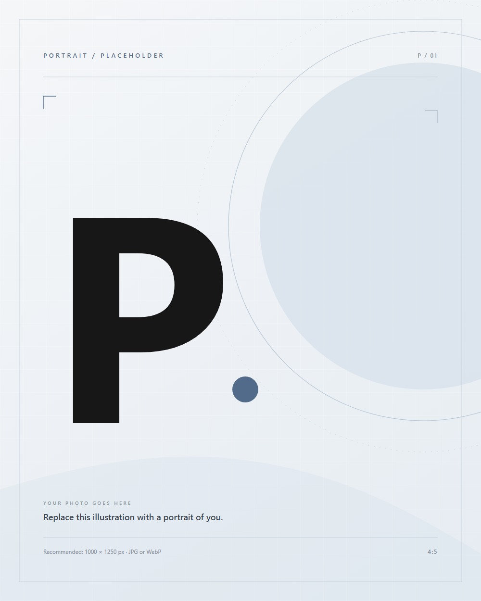
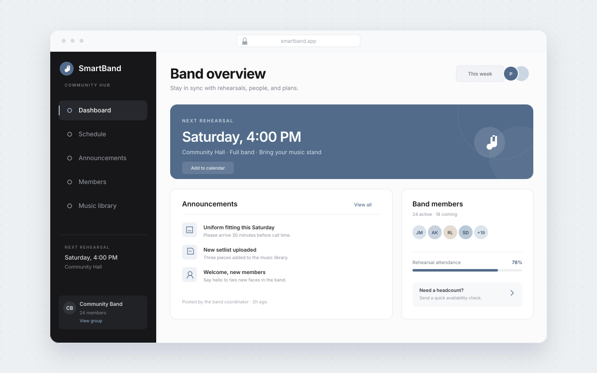
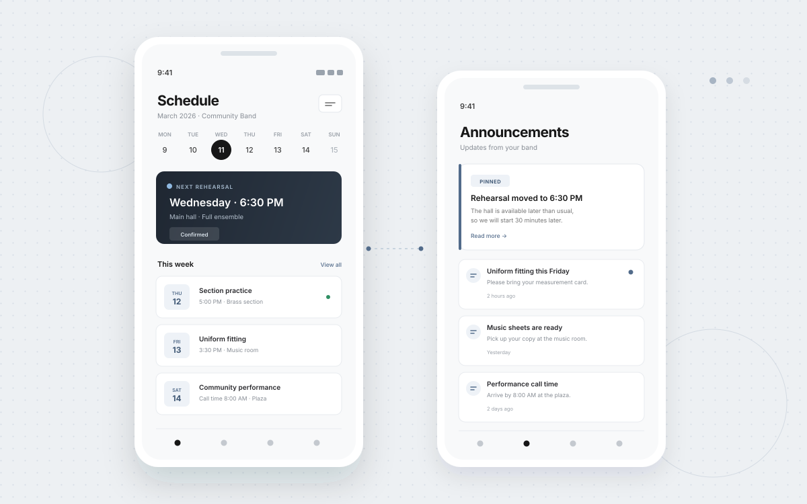
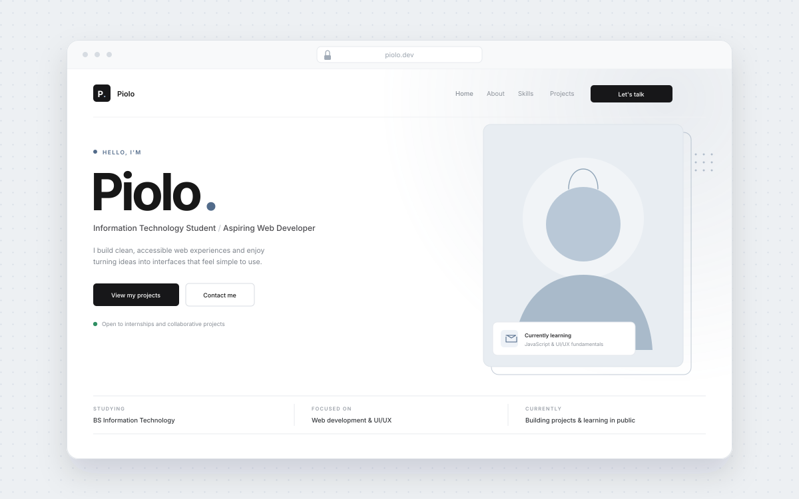
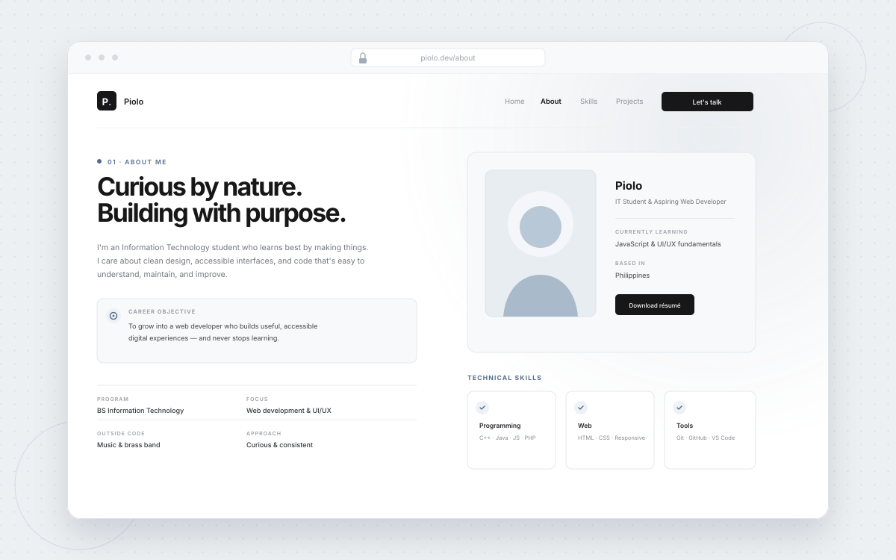
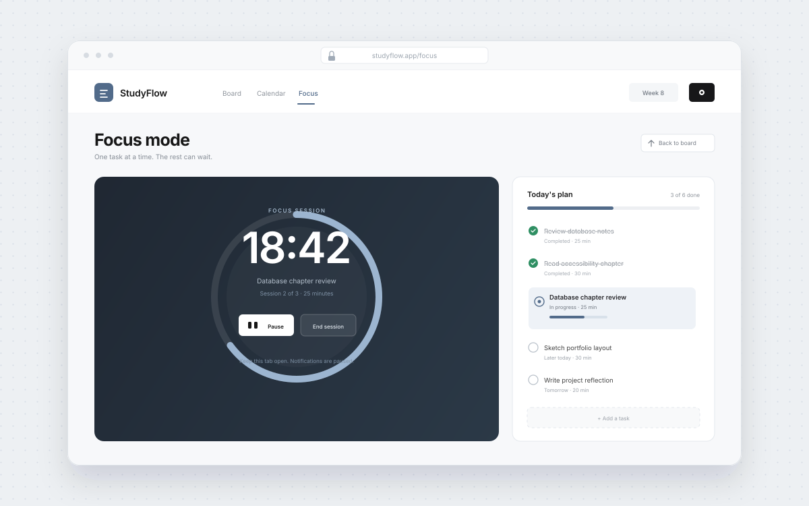
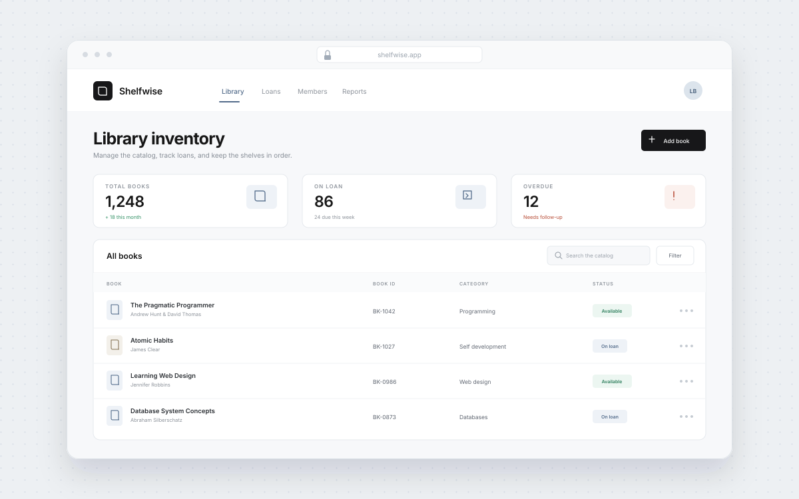
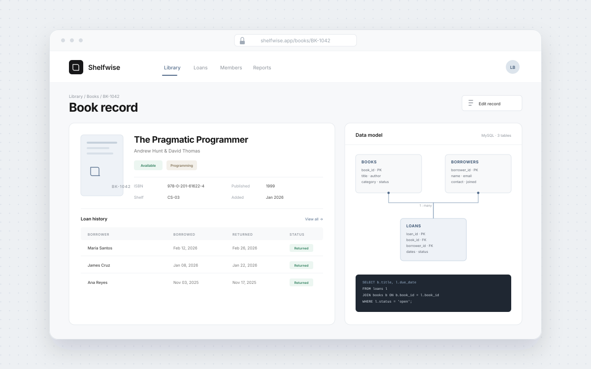

Programming Languages
C++, Java, JavaScript, PHP
IT Portfolio · Supporting documentation

Information Technology Student · Aspiring Web Developer
I build clean, accessible web experiences and enjoy turning ideas into interfaces that feel simple to use. This document collects the profile, skills, projects, and screenshots featured in my portfolio.
Placeholder notice: the name, email, social URLs, education entries, certifications, experience, and project links are editable placeholders. Replace them with verified information before submitting or publishing.
I'm an Information Technology student who learns best by making things. Whether it's a small webpage, a class project, or a new piece with the band, I enjoy starting with an idea and refining it until it feels right. I care about clean design, accessible interfaces, and code that's easy to understand, maintain, and improve.
To grow into a web developer who builds useful, accessible digital experiences — and to contribute to a team that values clean code, thoughtful design, and continuous learning.
C++, Java, JavaScript, PHP
HTML5, CSS3, JavaScript, Responsive design
MySQL, Relational basics, Data modeling, SQL queries
Git & GitHub, VS Code, Chrome DevTools, Live Server
UI/UX fundamentals, Wireframing, Accessibility basics, Responsive layout
Basic networking, Software development fundamentals, Problem solving, Documentation
Each project below includes its description, objectives, technologies, my contribution, the expected output, two screenshots, and the source link. The repository and live-demo addresses are placeholders until the projects are published. Project images are illustrative interface previews — replace them with actual screenshots of your work before submitting.
Academic Project
HTML5 · CSS3 · JavaScript · PWA
SmartBand is an academic project concept for a progressive web app that would help a community band stay organized. The idea brings announcements, rehearsal schedules, and member coordination into one calm, mobile-first space.
Planned the content structure, designed the mobile-first layout, and built the interface prototype with HTML, CSS, and JavaScript. The project is still a concept, so the features and content are being tested and refined.
A clickable interface concept with a member dashboard, rehearsal schedule, and announcement views.


Source code: github.com/yourusername/smartband Live demo: Not yet published
Personal Project
HTML5 · CSS3 · JavaScript · Accessibility
A fully responsive personal portfolio designed and developed from scratch with semantic HTML5, modern CSS3, and vanilla JavaScript. It includes accessible navigation, project filtering, a light/dark theme, scroll reveals, and client-side form validation.
Designed and built the entire site: layout, visual system, responsive behavior, interactions, and content structure. Wrote the HTML, CSS, and JavaScript, then tested the pages across desktop and mobile screen sizes.
A responsive portfolio website with project filtering, an accessible project-detail dialog, and a contact form that validates locally.


Source code: github.com/yourusername/portfolio Live demo: yourusername.github.io (placeholder)
Personal Project
HTML5 · CSS3 · JavaScript · localStorage
StudyFlow is a lightweight study planner concept for keeping coursework, deadlines, and focus sessions in one calm dashboard. The project explores how small, well-organized interfaces can reduce the friction of planning a busy semester.
Defined the task structure, designed the dashboard, and prototyped the column layout and focus timer in HTML, CSS, and JavaScript. The project is being refined as a personal experiment.
An interactive planner concept with a task board, deadline labels, and a focus-session view.


Source code: github.com/yourusername/studyflow Live demo: Not yet published
Academic Project
Java · MySQL · OOP · CRUD
A console-based library inventory exercise built to practice object-oriented programming, relational data, and CRUD operations. The project focuses on keeping book records, borrowers, and availability organized with a clear data model.
Designed the data model and table structure, wrote the Java classes for books and loans, and implemented the CRUD and query operations for the coursework exercise.
A console-based inventory program backed by MySQL that can add, search, update, and remove book and borrower records.


Source code: github.com/yourusername/shelfwise Live demo: Console application — no web demo
Five verified webinar and training certificates earned in 2026 covering System Integration & APIs, UI/UX Design, Artificial Intelligence, and Emerging IT Trends:
No verified experience or accomplishments have been added yet. This section can include OJT or internship experience, hackathons, programming competitions, research projects, academic awards, technical seminars, and leadership or organizational involvement.
Email
piolo@example.com
GitHub
github.com/yourusername
Portfolio
yourusername.github.io
Facebook
facebook.com/yourusername